| Auteur : | [Prénom NOM] |
| Langage : | Python 3 |
| Date : | Octobre 2026 |
| Dépôt GitHub : | https://github.com/BilalBSK/gestion-colis |
Une entreprise de livraison prépare chaque jour le chargement de ses camions à partir d'une liste de colis. Chaque colis est décrit par un identifiant, un poids, une valeur, une priorité et une destination.
Le programme réalisé doit répondre à deux besoins :
Le projet est réalisé en Python 3, avec la bibliothèque standard uniquement. Ce choix repose sur trois raisons :
unittest), mesurer les temps d'exécution (time) et la mémoire
(tracemalloc), et lire des fichiers CSV (csv).Contrepartie assumée : Python est un langage interprété. Une même boucle s'exécute en général 10 à 100 fois plus lentement qu'en C. Cela ne change pas les complexités, mais cela change les temps mesurés. L'étude des performances en tiendra compte.
Respect du sujet (partie 9) : les algorithmes qui constituent le cœur du travail (tris, optimisation du chargement) sont implémentés à la main, et leur fonctionnement est expliqué dans ce rapport. Lorsqu'une fonction native est utilisée pour une opération courante, l'algorithme sous-jacent et sa complexité sont précisés. Aucune bibliothèque externe n'est utilisée.
Le dépôt respecte l'organisation demandée (dossier src/, README.md,
rapport.pdf), complétée par quatre dossiers utiles :
projet/ ├── src/ code source du programme ├── tests/ tests unitaires ├── donnees/ fichiers de colis (exemple du sujet) ├── docs/ source de ce rapport et captures d'écran ├── outils/ génération du rapport, captures, mesures ├── README.md présentation et mode d'emploi └── rapport.pdf ce rapport
Le projet a été réalisé par étapes successives. Chaque étape a été validée (tests unitaires et exécution du programme) avant de passer à la suivante, puis enregistrée par un commit sur le dépôt GitHub. L'historique des commits reflète donc la progression du travail.
Le sujet impose au minimum cinq informations par colis. Le tableau suivant précise, pour chacune, le type retenu et les contraintes vérifiées à la création du colis.
| Attribut | Type | Contrainte | Justification |
|---|---|---|---|
| identifiant | entier | ≥ 0, unique | Sert de clé pour retrouver un colis. L'unicité est vérifiée par la collection (partie 4). |
| poids | entier (kg) | > 0 | Un poids nul ou négatif n'a pas de sens physique. Le choix d'un entier est expliqué ci-dessous. |
| valeur | entier | ≥ 0 | Une valeur nulle reste possible (colis sans valeur marchande). |
| priorité | entier | de 1 à 5 | Échelle fermée, cohérente avec les exemples du sujet (valeurs de 1 à 5). |
| destination | texte | non vide | Les espaces en début et en fin sont supprimés (« Paris » saisi avec un espace en trop désigne toujours Paris). |
| Problème | Représenter un colis de façon fiable et compacte, sachant que le programme doit en manipuler jusqu'à 100 000, voire davantage. |
| Solution retenue | Une classe de données Python (@dataclass) nommée Colis, déclarée avec deux options :
|
| Complexité en temps | Création et accès à un attribut : O(1). |
| Complexité en espace | O(1) par colis, soit O(n) pour n colis. Mesure : environ 112 octets par colis. |
| Alternatives | Un dictionnaire par colis, une dataclass classique (sans slots), un tuple nommé (namedtuple), ou des tableaux séparés par attribut (un tableau des poids, un tableau des valeurs, etc.). |
| Justification |
Mémoire : c'est la représentation la plus compacte parmi celles qui restent lisibles (mesure ci-dessous) : deux fois moins qu'un dictionnaire par colis. Fiabilité : l'immuabilité empêche de modifier par erreur l'identifiant d'un colis déjà rangé dans la collection, ce qui rendrait l'index incohérent. Lisibilité : on écrit colis.poids plutôt que colis["poids"] ou colis[1].Les tableaux séparés par attribut seraient encore plus compacts, mais beaucoup moins lisibles. Cette piste n'est intéressante qu'à partir de plusieurs millions de colis (partie 12). |
La mesure suivante compare la mémoire nécessaire pour créer 100 000 colis avec chacune des
représentations envisagées (script outils/mesure_memoire_colis.py, mesure réalisée avec le
module tracemalloc, liste contenant les colis comprise) :
| Représentation | Mémoire pour 100 000 colis | Par colis |
|---|---|---|
| Dictionnaire par colis | 22,4 Mo | 224 octets |
dataclass sans slots | 15,2 Mo | 152 octets |
Tuple nommé (namedtuple) | 13,6 Mo | 136 octets |
dataclass avec slots (retenu) | 11,2 Mo | 112 octets |
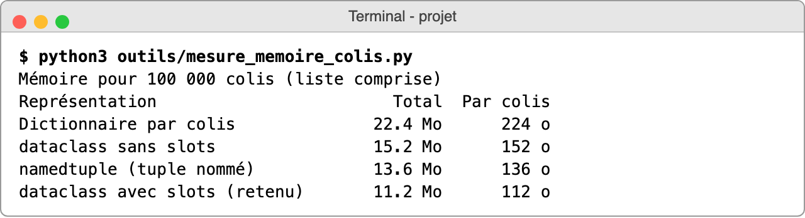
Chaque colis est vérifié au moment de sa création (méthode __post_init__, coût O(1)).
Un colis incohérent ne peut donc jamais entrer dans le programme : les algorithmes suivants n'ont pas
à se méfier des données. Les règles vérifiées sont :
En cas d'erreur, une exception explicite est levée (par exemple « la priorité doit être comprise entre 1 et 5 »). L'interface pourra ainsi afficher un message clair à l'utilisateur au lieu de s'arrêter.
Les cinq colis du sujet sont enregistrés dans le fichier donnees/colis_exemple.csv :
identifiant;poids;valeur;priorite;destination 101;8;20;2;Paris 102;3;10;5;Lille 103;12;40;1;Lyon 104;5;25;4;Paris 105;2;15;3;Lille
Le format CSV a été choisi parce qu'il est simple, lisible par un humain et ouvrable dans un tableur.
Le séparateur « ; » est celui des tableurs en français, où la virgule sert de séparateur décimal.
Le module stockage.py lit et écrit ce format, en O(n) en temps et en mémoire pour n colis.
Si une ligne est invalide, le message d'erreur indique son numéro (par exemple
« ligne 3 : le poids doit être strictement positif »), ce qui permet de corriger le fichier facilement.
Dix-sept tests unitaires (tests/test_colis.py) vérifient :
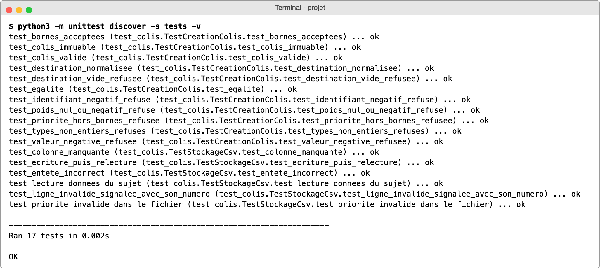
Cette partie couvre les fonctionnalités 1 à 3 du sujet. Les trois opérations dépendent d'un même choix : la structure de données qui contient la collection. Ce choix est donc présenté en premier. Dans toute la suite, n désigne le nombre de colis de la collection.
| Structure | Ajout (avec contrôle des doublons) | Recherche par identifiant | Parcours | Mémoire |
|---|---|---|---|---|
| Liste non triée | O(n) : il faut parcourir la liste pour vérifier que l'identifiant est libre | O(n) | O(n), ordre d'insertion | O(n), la plus faible |
| Liste triée par identifiant | O(n) : il faut décaler les éléments pour insérer au bon endroit | O(log n) par dichotomie | O(n), ordre des identifiants | O(n) |
| Arbre binaire de recherche équilibré (AVL) | O(log n) | O(log n) | O(n), ordre des identifiants | O(n), mais deux pointeurs par nœud |
| Table de hachage (retenue) | O(1) en moyenne | O(1) en moyenne | O(n), ordre d'insertion | O(n) |
Une table de hachage est un tableau de cases. Pour ranger un colis, on calcule à partir de son identifiant un nombre appelé haché, qui désigne directement la case où le colis doit être placé. Pour retrouver le colis, on refait le même calcul et on accède directement à la bonne case : il n'est pas nécessaire de parcourir la collection.
| Problème | Stocker un nombre potentiellement important de colis, empêcher deux colis d'avoir le même identifiant et retrouver rapidement un colis à partir de son identifiant. |
| Solution retenue | Une table de hachage (dict Python) qui associe à chaque identifiant le colis correspondant : identifiant → Colis. |
| Complexité en temps | Ajout, test de doublon, recherche : O(1) en moyenne (O(1) amorti pour l'ajout). Parcours complet : O(n). |
| Complexité en espace | O(n). Mesure : de 30 à 52 octets par colis selon le taux de remplissage de la table, en plus des colis eux-mêmes (partie 3). |
| Alternatives | Liste non triée, liste triée et recherche dichotomique, arbre binaire de recherche équilibré (tableau ci-dessus). |
| Justification | La recherche par identifiant et l'ajout sont les opérations les plus fréquentes : la table de hachage les rend indépendantes du nombre de colis. Les deux avantages d'un arbre (parcours dans l'ordre des identifiants, recherche par intervalle) ne sont pas demandés par le sujet. Les tris par poids, valeur ou priorité sont traités à part (partie 5). Le surcoût mémoire, environ 5 Mo pour 100 000 colis, est faible. |
| Problème | Ajouter un nouveau colis à la collection sans jamais créer deux colis de même identifiant. |
| Algorithme | 1. Vérifier que l'identifiant n'est pas déjà une clé de la table (identifiant in table).2. Si c'est le cas, refuser l'ajout avec un message explicite : la collection reste inchangée. 3. Sinon, insérer le colis et mettre à jour le plus grand identifiant connu. |
| Complexité en temps | O(1) amorti. Charger un fichier de n colis coûte donc O(n). |
| Complexité en espace | O(1) supplémentaire par ajout. |
| Alternative | Ranger les colis dans une liste et vérifier les doublons par un parcours : O(n) par ajout, donc O(n²) pour charger n colis. |
| Justification | Avec une liste, charger 100 000 colis demanderait environ n²/2 = 5 milliards de comparaisons. Avec la table de hachage, il suffit de 100 000 opérations en temps constant. Le plus grand identifiant est tenu à jour à chaque ajout : l'interface peut ainsi proposer un identifiant libre en O(1), au lieu de rechercher le maximum en O(n) à chaque fois. |
| Problème | Afficher les colis enregistrés de façon lisible, y compris lorsque la collection en contient 100 000. |
| Algorithme | Parcourir les colis dans l'ordre d'insertion et mettre chacun en forme sur une ligne de tableau (identifiant, poids, valeur, priorité, destination). Un paramètre limite permet de n'afficher qu'une page, suivie du nombre de colis restants. |
| Complexité en temps | O(n) pour tout afficher, O(min(n, limite)) pour une page. |
| Complexité en espace | O(n) pour la copie de la liste des colis transmise à l'affichage. |
| Alternative | Toujours tout afficher. |
| Justification | Afficher tous les colis coûte forcément O(n), puisque chacun doit être écrit. En revanche, 100 000 lignes défilant dans un terminal sont inexploitables : cela représente 5 000 écrans de 20 lignes. Afficher une page à la fois coûte un temps constant (environ 11 µs, mesuré en partie 7) et garde l'interface lisible. L'utilisateur pourra tout de même demander l'affichage complet (partie 6). |
| Problème | Retrouver un colis à partir de son identifiant, ou signaler qu'il n'existe pas. |
| Algorithme | Accès direct dans la table de hachage : l'identifiant est haché, on lit la case correspondante. |
| Complexité en temps | O(1) en moyenne (O(n) dans le pire cas théorique). |
| Complexité en espace | O(1) : aucune mémoire supplémentaire. |
| Alternatives | Recherche séquentielle : comparer l'identifiant à celui de chaque colis, en O(n). Recherche dichotomique dans une liste triée par identifiant : on compare l'identifiant cherché à celui du milieu, puis on ne garde que la moitié qui peut le contenir. Coût O(log n), mais la liste doit rester triée : chaque ajout coûte O(n). |
| Justification | Seule la table de hachage offre à la fois une recherche et un ajout rapides. Les mesures ci-dessous le confirment. |
Le script outils/mesure_recherche.py compare les trois méthodes. Pour chaque taille, il effectue
20 000 recherches d'identifiants existants tirés au hasard (moins pour la séquentielle, trop lente) et donne
le temps moyen d'une recherche. La colonne « absent » mesure la séquentielle quand l'identifiant n'existe pas,
ce qui est son pire cas. La dernière colonne donne la mémoire occupée par la table de hachage.
| n | Hachage (retenu) | Dichotomie | Séquentielle | Séquentielle, id absent | Mémoire de la table |
|---|---|---|---|---|---|
| 100 | 23 ns | 233 ns | 450 ns | 824 ns | 5 Ko |
| 1 000 | 25 ns | 358 ns | 3,5 µs | 7,1 µs | 37 Ko |
| 10 000 | 33 ns | 476 ns | 33,2 µs | 68,5 µs | 295 Ko |
| 100 000 | 124 ns | 665 ns | 518,6 µs | 944,3 µs | 5 243 Ko |
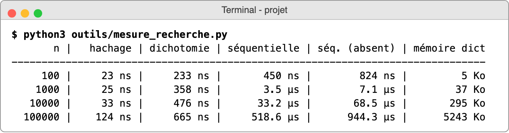
Quinze tests unitaires (tests/test_gestion.py) vérifient :
Le script outils/demo_etape2.py enchaîne les trois fonctionnalités sur les données du sujet :
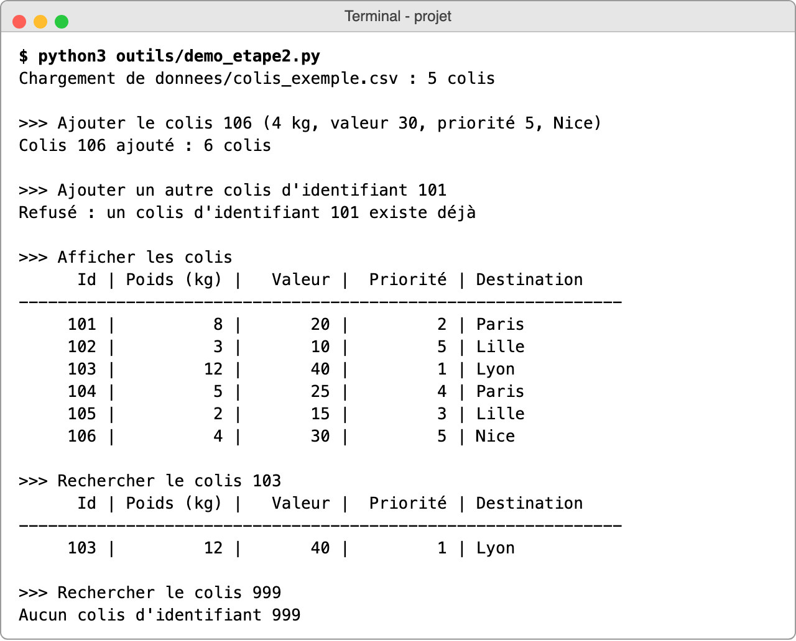
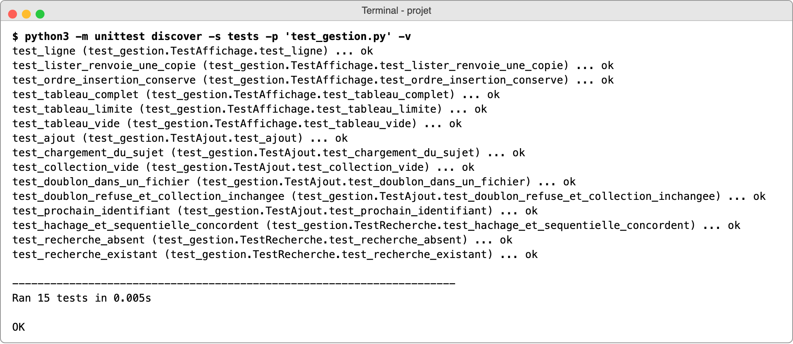
Cette partie couvre les fonctionnalités 4, 5 et 6 du sujet : afficher les colis triés par poids, par
valeur et par priorité. Les algorithmes de tri font partie du cœur algorithmique du projet. Conformément
à la partie 9 du sujet, ils sont donc implémentés à la main (fichier src/tris.py) au
lieu d'utiliser la fonction native sorted(). Celle-ci sert seulement de référence, pour
vérifier les résultats et comparer les temps.
Les trois tris ont des caractéristiques communes :
Le tri fusion applique la méthode « diviser pour régner » :
Une liste de 0 ou 1 élément est déjà triée : c'est la condition d'arrêt. Exemple avec les poids des cinq colis du sujet (101 : 8 kg, 102 : 3 kg, 103 : 12 kg, 104 : 5 kg, 105 : 2 kg) :
Découpage : [8, 3, 12, 5, 2]
/ \
[8, 3] [12, 5, 2]
/ \ / \
[8] [3] [12] [5, 2]
/ \
[5] [2]
Fusions :
[8] + [3] -> [3, 8]
[5] + [2] -> [2, 5]
[12] + [2, 5] -> [2, 5, 12]
[3, 8] + [2, 5, 12] -> [2, 3, 5, 8, 12]
Pour fusionner deux listes déjà triées, on compare leurs premiers éléments et on retire le plus petit, jusqu'à épuiser l'une des deux listes. Il ne reste alors qu'à recopier la fin de l'autre :
Fusion de [3, 8] et [2, 5, 12] : 3 ou 2 -> 2 résultat : [2] 3 ou 5 -> 3 résultat : [2, 3] 8 ou 5 -> 5 résultat : [2, 3, 5] 8 ou 12 -> 8 résultat : [2, 3, 5, 8] il reste [12] résultat : [2, 3, 5, 8, 12]
Chaque comparaison place définitivement un élément : fusionner deux listes de longueurs totales m coûte donc O(m). En cas d'égalité, on prend l'élément de la moitié gauche, arrivé le premier : c'est ce qui rend le tri stable.
La liste est coupée en deux à chaque niveau : il y a donc log2(n) niveaux de découpage. À chaque niveau, les fusions traitent en tout les n éléments une fois chacun. Le coût total est donc O(n log n). Ce coût ne dépend pas de l'ordre initial des colis : le tri fusion n'a pas de pire cas défavorable. Pour 100 000 colis, cela représente environ 100 000 × 17 ≈ 1,7 million d'opérations élémentaires, contre environ 5 milliards (n²/2) pour un tri naïf.
En mémoire, l'implémentation alloue une seule fois deux tampons de n cases (l'un pour les colis, l'autre pour leurs clés), partagés par toutes les fusions, au lieu de créer de nouvelles listes à chaque appel. S'y ajoute la pile des appels récursifs, de profondeur log2(n), soit 17 pour 100 000 colis. La clé de tri (poids ou valeur) est lue une seule fois par colis, puis déplacée avec lui.
| Problème | Afficher les colis classés selon leur poids ou leur valeur. Ces grandeurs n'ont pas de borne fixée à l'avance : un colis peut peser 2 kg comme 800 kg. |
| Algorithme | Tri fusion récursif, stable, avec des tampons alloués une seule fois (détaillé ci-dessus). |
| Complexité en temps | O(n log n) dans le meilleur, le moyen et le pire cas. |
| Complexité en espace | O(n) : liste des clés et deux tampons de n cases. S'y ajoutent O(log n) pour la récursion. |
| Alternatives | Tri par insertion : simple, mais O(n²). Mesuré ci-dessous, il prend 1 s pour 10 000 colis, et il faudrait environ 100 s pour 100 000. Tri rapide (quicksort) : O(n log n) en moyenne, en place, mais O(n²) dans le pire cas et non stable. Tri par tas (heapsort) : O(n log n) dans tous les cas et en place, mais non stable. Tri par comptage : impossible ici, car le poids et la valeur ne sont pas bornés (voir 5.2). sorted() de Python (voir 5.4). |
| Justification | Le tri fusion est le seul tri par comparaison classique qui soit à la fois garanti en O(n log n) et stable. La stabilité est indispensable au tri combiné (5.3). Sa contrepartie, la mémoire supplémentaire en O(n), ne représente qu'environ 2,4 Mo pour 100 000 colis (trois listes de 100 000 références de 8 octets). |
La priorité ne peut prendre que 5 valeurs (1 à 5). On peut donc trier sans comparer les colis entre eux. On prépare 5 « seaux », un par priorité, et on range chaque colis dans le seau de sa priorité, dans l'ordre où il arrive. Il suffit ensuite de vider les seaux dans l'ordre : de 1 à 5 pour un tri croissant, de 5 à 1 pour un tri décroissant. Exemple avec les colis du sujet et un colis 106 de priorité 5 :
Colis parcourus dans l'ordre :
101 (p2), 102 (p5), 103 (p1), 104 (p4), 105 (p3), 106 (p5)
seau priorité 1 : [103]
seau priorité 2 : [101]
seau priorité 3 : [105]
seau priorité 4 : [104]
seau priorité 5 : [102, 106] <- 102, arrivé avant 106,
reste devant (stabilité)
Lecture des seaux de 5 à 1 (décroissant) : 102, 106, 104, 105, 101, 103
On démontre qu'un tri qui procède uniquement par comparaisons ne peut pas faire mieux que n log n comparaisons dans le pire cas. Il y a n! ordres possibles des colis, et chaque comparaison apporte une seule réponse oui/non : il faut donc au moins log2(n!) ≈ n log2 n comparaisons pour distinguer tous les cas. Le tri par comptage échappe à cette limite parce qu'il n'effectue aucune comparaison : la priorité donne directement le seau. Il parcourt une fois les n colis, puis les k = 5 seaux, d'où un coût O(n + k) = O(n).
| Problème | Afficher les colis classés selon leur priorité, une clé entière comprise entre 1 et 5. |
| Algorithme | Tri par comptage, avec un seau par valeur de priorité (détaillé ci-dessus). Stable. |
| Complexité en temps | O(n + k), soit O(n) puisque k = 5. |
| Complexité en espace | O(n + k) : les seaux contiennent les n colis et la liste résultat. |
| Alternative | Le tri fusion de 5.1, en O(n log n), qui fonctionne aussi mais ne tire pas parti du petit nombre de priorités. |
| Justification | Le domaine de la clé est petit et connu à l'avance : c'est le cas idéal du tri par comptage. Mesuré à 100 000 colis, il prend 2,9 ms, contre 116,5 ms pour le tri fusion sur la même clé, soit 40 fois plus rapide. Ce tri ne convient pas au poids ni à la valeur : sans borne connue, il faudrait autant de seaux que de valeurs possibles. |
Trier par priorité seule laisse les colis de même priorité dans leur ordre d'enregistrement. Pour les départager par valeur, on exploite la stabilité :
Le second tri regroupe les colis par priorité. Comme il est stable, il conserve à l'intérieur de chaque priorité l'ordre des valeurs obtenu au premier tri. Le coût total est O(n log n) + O(n) = O(n log n). Sur la figure 6, le tri par priorité seul place 102 devant 106 (ordre d'enregistrement), alors que le tri combiné place 106 (valeur 30) devant 102 (valeur 10). Les tests vérifient ce tri sur 1 000 colis aléatoires, en le comparant à un tri de référence sur le couple (priorité, valeur).
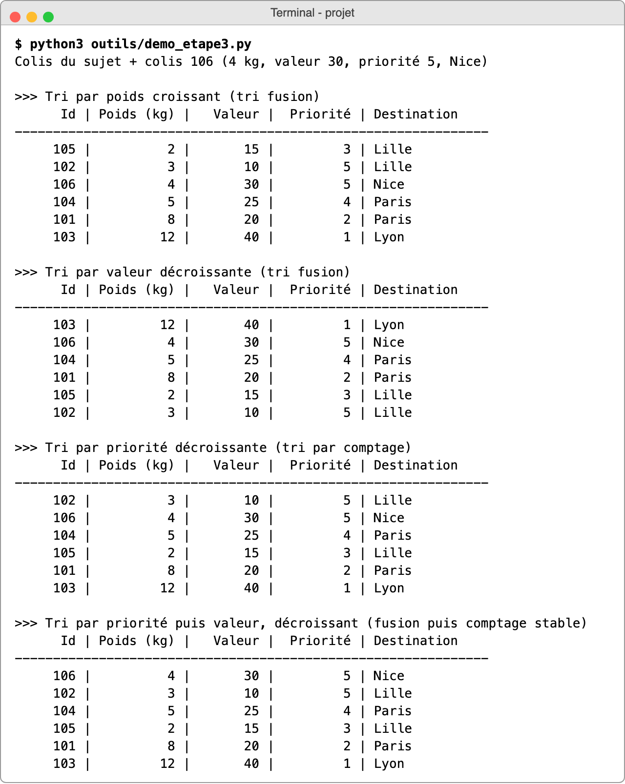
sorted() : fonctionnement et raison de ne pas l'utiliserLa fonction sorted() de Python utilise l'algorithme Timsort. Il repère dans la liste
les portions déjà triées (appelées « runs »), trie les petites portions par insertion, puis les fusionne
deux à deux comme le tri fusion. Il est stable, s'exécute en O(n log n) dans le pire cas et en O(n) sur
une liste déjà triée, et utilise O(n) de mémoire. Comme il est écrit en C, il est environ 19 fois plus
rapide que notre tri fusion écrit en Python (6,2 ms contre 119,9 ms pour 100 000 colis), pour une
complexité identique.
Il n'est pas utilisé dans le programme, parce que le sujet demande de maîtriser l'algorithme au cœur de
chaque fonctionnalité. Il sert en revanche de référence : les tests vérifient que nos tris donnent
exactement le même résultat que sorted(), y compris l'ordre des égalités. Dans un logiciel
en production, on utiliserait sorted() pour le poids et la valeur, et l'on conserverait le
tri par comptage pour la priorité : même face à sorted(), il reste deux fois plus rapide
(2,9 ms contre 6,2 ms).
Le script outils/mesure_tris.py trie des collections de 100 à 100 000 colis aléatoires et
retient le meilleur temps sur plusieurs exécutions. Le tri par insertion n'est mesuré que jusqu'à
10 000 colis : au-delà, il prendrait plusieurs minutes.
| n | Poids : insertion | Poids : fusion (retenu) | Poids : sorted() | Priorité : comptage (retenu) | Priorité : fusion |
|---|---|---|---|---|---|
| 100 | 112 µs | 60 µs | 4 µs | 4 µs | 60 µs |
| 1 000 | 10,6 ms | 861 µs | 51 µs | 34 µs | 839 µs |
| 10 000 | 1,04 s | 10,1 ms | 595 µs | 285 µs | 9,8 ms |
| 100 000 | ≈ 100 s (estimé) | 119,9 ms | 6,2 ms | 2,9 ms | 116,5 ms |
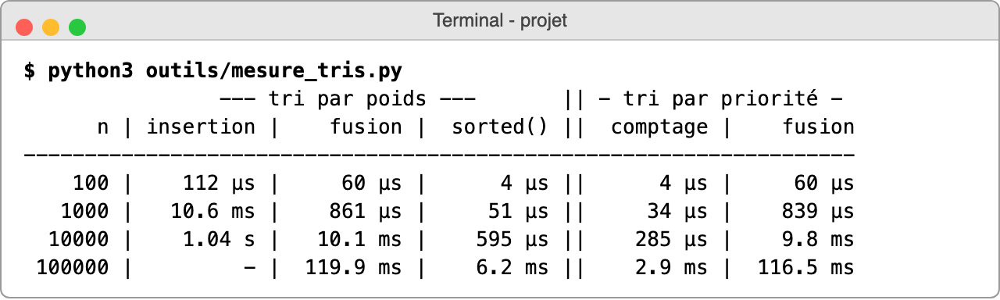
sorted() a la même croissance que notre tri fusion, avec un
facteur constant environ 19 fois plus petit. Ce n'est pas un meilleur algorithme : c'est le même type
d'algorithme, exécuté en C plutôt qu'interprété.Conclusion : avec 100 000 colis, les tris retenus restent largement assez rapides pour une utilisation interactive : 120 ms au plus, 3 ms pour la priorité. Un tri naïf en O(n²) serait inutilisable.
Seize tests unitaires (tests/test_tris.py) vérifient :
sorted() sur plus de 50 listes
aléatoires, de 0 à 5 000 éléments, dans les deux sens ;sorted() sur 20 000 colis
pour les trois critères.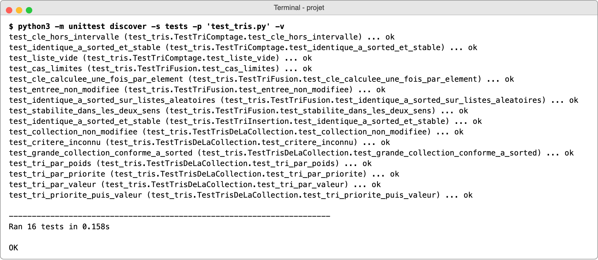
L'objectif fixé par le sujet n'est pas une interface complexe, mais une utilisation cohérente qui
permette de tester facilement toutes les fonctionnalités. Le programme se lance depuis la racine du
projet avec la commande python3 src/main.py. Au démarrage, il charge les cinq colis d'exemple
du sujet : toutes les fonctionnalités sont donc testables immédiatement, sans rien saisir au préalable.
Le menu reprend l'organisation proposée par le sujet (options 1 à 7 et 0). Chaque option appelle une méthode de la collection, ce qui permet d'en rappeler l'algorithme et le coût :
| Option | Fonctionnalité | Méthode et algorithme | Coût |
|---|---|---|---|
| 1 | Afficher les colis | lister(), puis affichage par pages de 20 colis | O(20) par page |
| 2 | Ajouter un colis | ajouter() : table de hachage, contrôle des doublons | O(1) amorti |
| 3 | Rechercher un colis | rechercher() : table de hachage | O(1) en moyenne |
| 4 | Organiser les colis | trier() : tri fusion (poids, valeur), tri par comptage (priorité), ou les deux (priorité puis valeur) | O(n log n) ou O(n) |
| 5 | Préparer un camion | Optimisation du chargement (parties 8 et 9) | voir partie 8 |
| 6 | Afficher le chargement | Affichage du dernier chargement calculé (parties 8 et 9) | O(m), m colis chargés |
| 7 | Afficher les statistiques | statistiques() : un seul parcours de la collection | O(n) |
| 8 | Générer des colis | generer_colis() : 100, 1 000, 10 000 ou 100 000 colis (partie 7) | O(n) |
| 9 | Charger / enregistrer un fichier CSV | Lecture ou écriture ligne par ligne (partie 3.4) | O(n) |
| 0 | Quitter | Fin de la boucle principale | O(1) |
Les options 8 et 9 complètent le menu proposé par le sujet : elles permettent de tester facilement le programme avec les quatre tailles de données demandées (partie 7) et de conserver une collection d'une utilisation à l'autre.
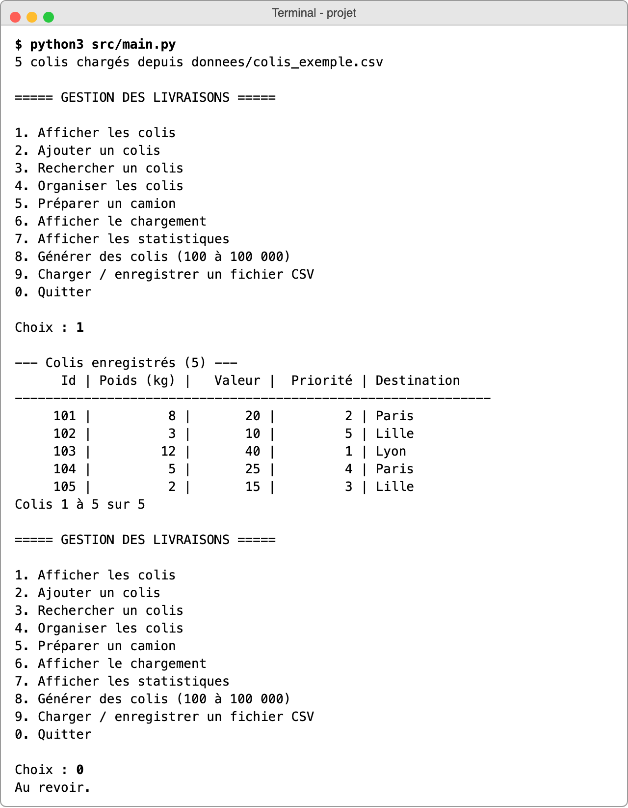
L'interface est séparée de la logique : les modules de calcul (gestion.py,
tris.py) ne lisent jamais le clavier et n'affichent rien. Ils reçoivent des données et renvoient
des résultats. Cette séparation permet de tester les algorithmes indépendamment de l'interface et de les
réutiliser ailleurs, par exemple dans les scripts de mesure.
| Module | Rôle |
|---|---|
main.py | Classe Application : affiche le menu, lit le choix et appelle l'action correspondante. Le choix est associé à son action par un dictionnaire (numéro → méthode), soit un accès en O(1) au lieu d'une longue suite de if. |
saisie.py | Saisies robustes : entier borné, texte obligatoire, question oui/non. |
affichage.py | Mise en forme des colis en tableau et découpage en pages. |
Une erreur de frappe ne doit jamais arrêter le programme ni corrompre la collection. Chaque saisie est donc vérifiée puis redemandée tant qu'elle est invalide :
Deux aides à la saisie complètent ce dispositif. L'identifiant libre suivant est proposé par défaut : il suffit d'appuyer sur Entrée, et son calcul est en O(1) grâce au plus grand identifiant tenu à jour (partie 4.2). Les temps de recherche et de tri sont affichés après chaque opération, ce qui permet d'observer directement le coût des algorithmes.
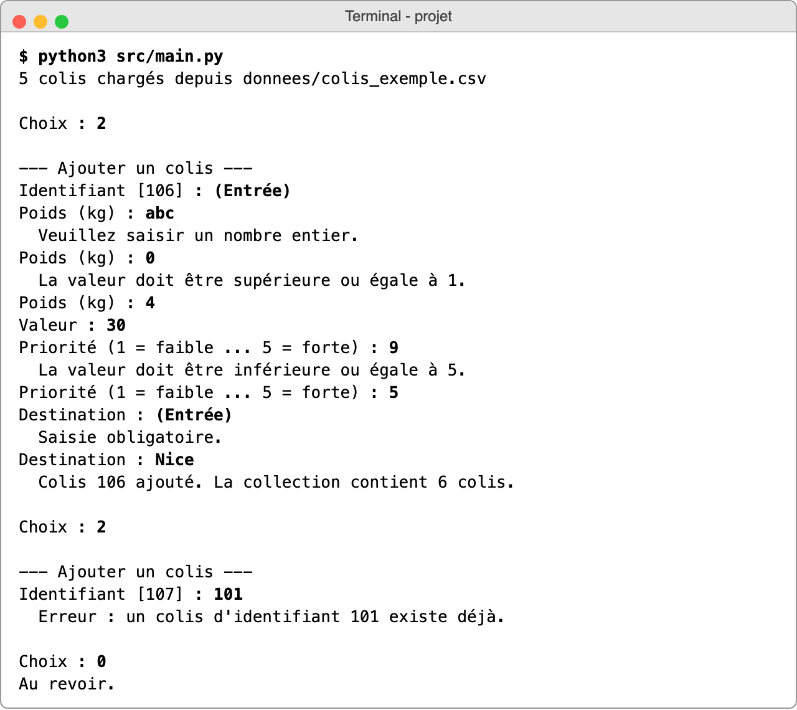
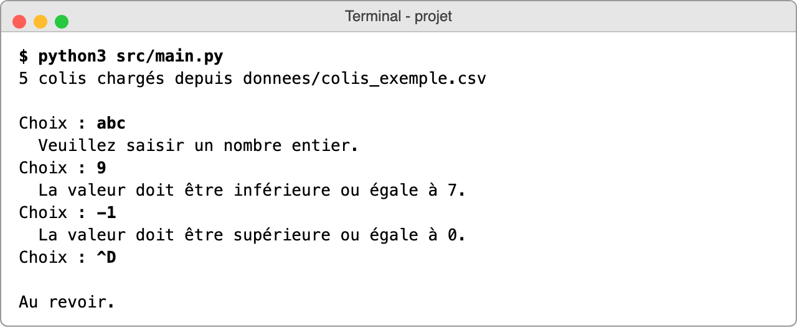
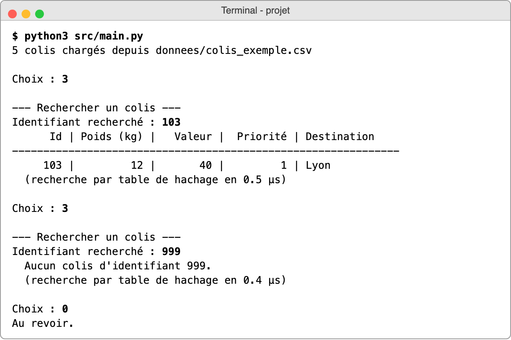
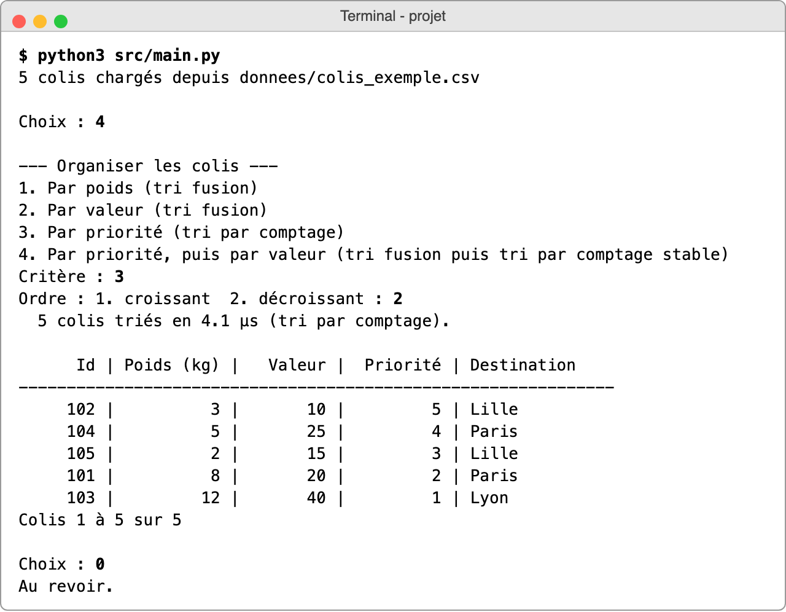
| Problème | Donner une vue d'ensemble de la collection : nombre de colis, poids et valeur totaux et moyens, colis extrêmes, répartition par priorité et par destination. |
| Algorithme | Un seul parcours de la collection, qui met à jour tous les indicateurs à la fois : sommes, extrêmes et compteurs rangés dans des dictionnaires (priorité → nombre, destination → nombre, poids et valeur). Les destinations sont ensuite classées par ordre alphabétique pour l'affichage. |
| Complexité en temps | O(n) pour le parcours, plus O(d log d) pour classer les d destinations. Comme d est très petit devant n, le coût total est O(n). |
| Complexité en espace | O(k + d) : 5 compteurs de priorité et 3 totaux par destination. Aucune copie de la collection. |
| Alternatives | (1) Un parcours par indicateur (somme, maximum, minimum...) : même complexité, mais 6 à 8 parcours au lieu d'un. (2) Tenir les statistiques à jour à chaque ajout : consultation en O(1), mais un coût supplémentaire à chaque ajout, et un calcul plus délicat du minimum ou du maximum si l'on supprimait des colis. |
| Justification | Les statistiques sont consultées ponctuellement, alors que les ajouts sont fréquents. Un parcours unique en O(n) est simple, toujours exact, et prend environ 13 ms pour 100 000 colis (partie 7). |
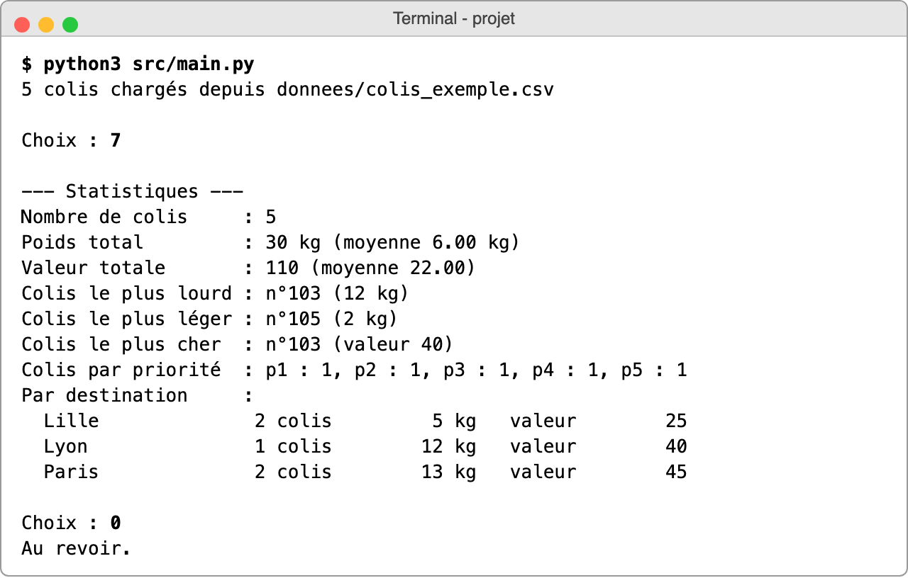
Dix-sept tests (tests/test_interface.py) vérifient les saisies, les statistiques et la
pagination. Neuf d'entre eux lancent le vrai programme en lui envoyant des saisies, exactement comme
un utilisateur : présence de toutes les options du menu, ajout puis recherche, saisies invalides corrigées,
identifiant existant refusé, recherche d'un colis absent, ordre exact d'un tri, statistiques, choix invalides,
et arrêt propre par Ctrl-D sans aucune erreur Python.
Les captures de cette partie ont été produites de la même manière, en exécutant réellement le programme
(scripts outils/capture.py et outils/session.py). Les saisies de l'utilisateur
apparaissent en gras. Pour alléger les captures, le menu n'est montré en entier que sur la figure 9.
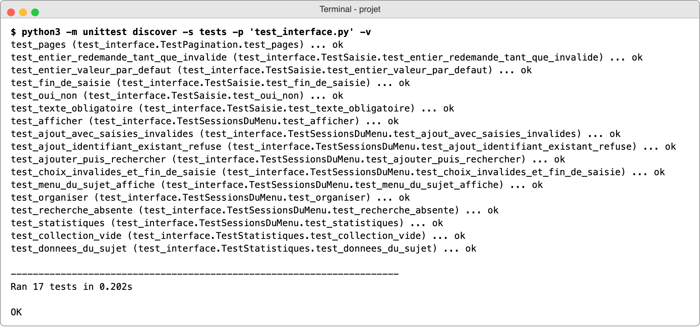
Le programme doit fonctionner avec les quatre tailles de données du sujet. Cette partie présente le générateur de jeux de données, vérifie que chaque fonctionnalité fonctionne à chaque niveau, puis analyse les conséquences de l'augmentation du nombre de colis.
| Niveau | Nombre de colis |
|---|---|
| Niveau 1 | 100 |
| Niveau 2 | 1 000 |
| Niveau 3 | 10 000 |
| Niveau 4 | 100 000 |
Le module generateur.py crée n colis aléatoires. Il est accessible depuis le menu (option 8),
qui propose les quatre niveaux. L'option 9 permet d'enregistrer une collection dans un fichier CSV et de la
recharger.
| Donnée | Génération | Justification |
|---|---|---|
| Identifiant | Entiers consécutifs, puis mélangés | Les identifiants sont uniques par construction. Le mélange (algorithme de Fisher-Yates, O(n)) évite que l'ordre de la collection soit celui des identifiants, ce qui favoriserait artificiellement certaines recherches. |
| Poids | Uniforme de 1 à 30 kg | Ordre de grandeur réaliste pour des colis. |
| Valeur | Entre 1 et 4 fois le poids | La valeur est corrélée au poids, comme dans la réalité, et la valeur par kilo (de 1 à 4) ne dépend pas du poids. Avec une valeur indépendante du poids, ou un bonus fixe ajouté à chaque colis, les colis légers seraient beaucoup plus rentables au kilo : le meilleur chargement ne contiendrait que des colis de 1 kg, ce qui rendrait le problème du camion (partie 8) artificiellement facile. Une première version du générateur ajoutait un tel bonus (de 0 à 10) : l'étape suivante a montré que le camion de 1 000 kg n'était alors rempli que de colis de 1 kg, et le bonus a été supprimé. |
| Priorité | Uniforme de 1 à 5 | Toutes les priorités sont représentées (environ 20 % chacune, figure 18). |
| Destination | Une parmi 10 villes | Environ 10 % des colis par ville (figure 18). |
La génération est reproductible : avec la même graine, on obtient exactement les mêmes colis. Les mesures et les tests peuvent ainsi être refaits à l'identique. Lorsqu'on ajoute des colis générés à une collection existante, les identifiants commencent après le plus grand identifiant utilisé, ce qui évite tout doublon. Le coût de la génération est O(n) en temps et en mémoire.
Les figures suivantes montrent le programme avec 100 000 colis (niveau 4) : génération, affichage par pages, recherche, tri, statistiques, puis enregistrement et rechargement d'un fichier.
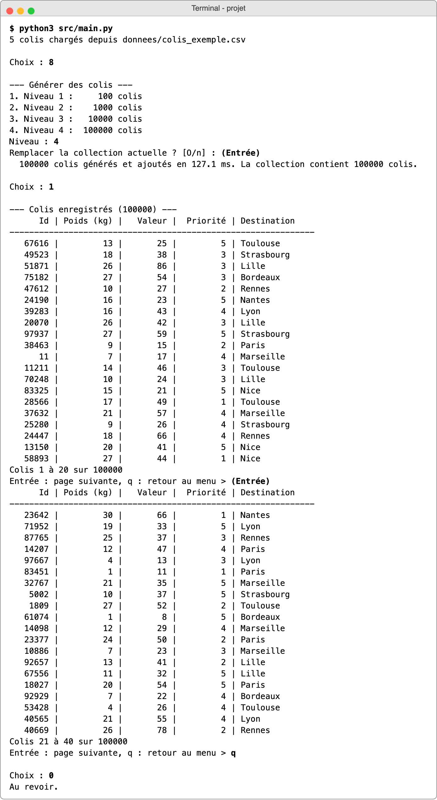
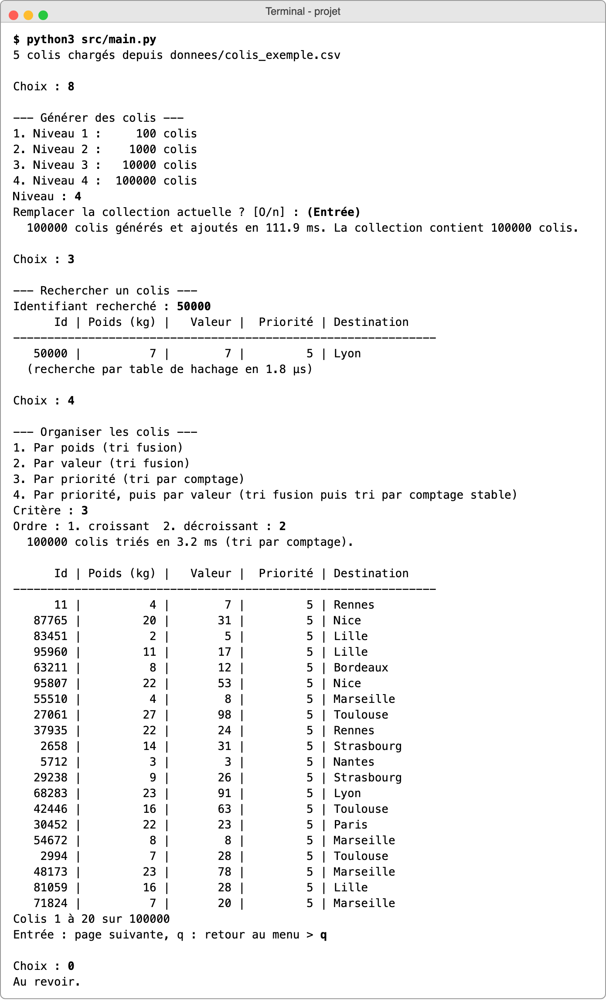
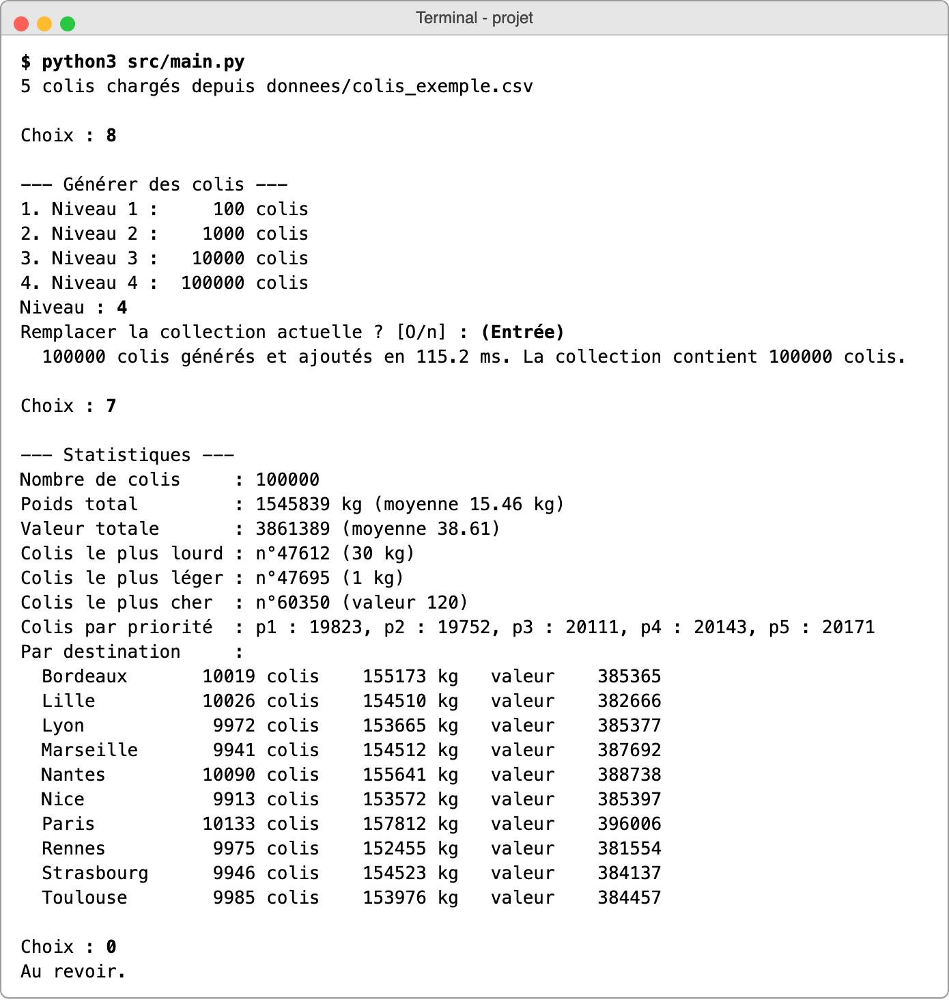
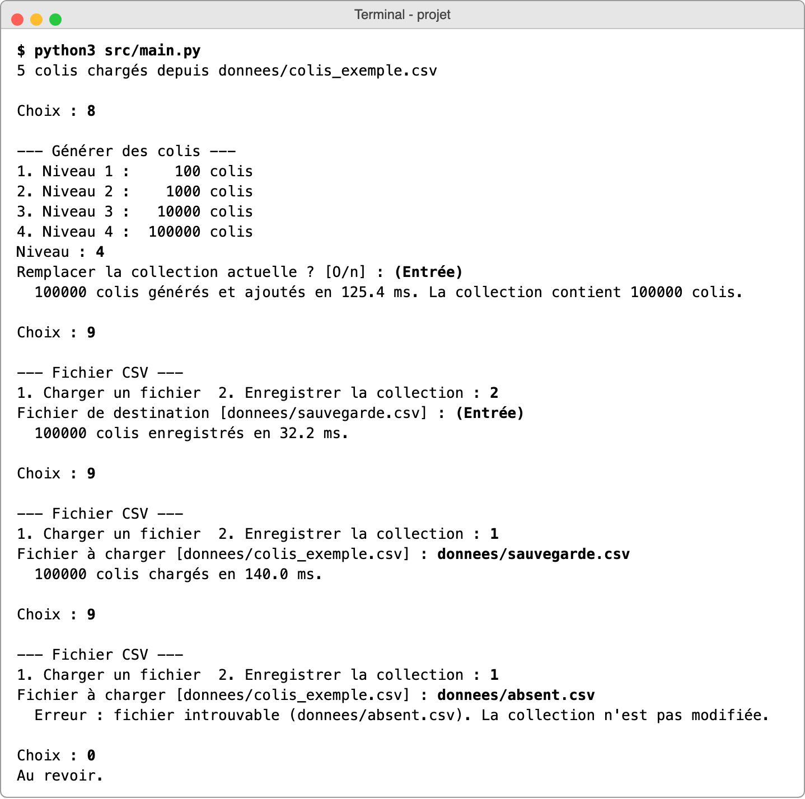
Onze tests (tests/test_echelle.py) vérifient le générateur (identifiants uniques et mélangés,
reproductibilité, bornes des valeurs) et, pour chacun des quatre niveaux : la recherche de 200 colis
présents et d'un colis absent, la conformité des trois tris à sorted() et la cohérence des
statistiques. Ils vérifient aussi l'écriture puis la relecture exacte d'un fichier de 100 000 colis, ainsi
que les options 8 et 9 du menu, pagination et fichier absent compris.
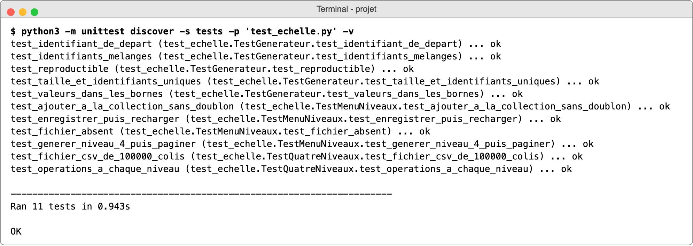
Le script outils/mesure_echelle.py mesure chaque opération de gestion aux quatre niveaux (meilleur
temps sur trois exécutions ; moyenne sur 10 000 recherches) :
| Opération | Complexité | n = 100 | n = 1 000 | n = 10 000 | n = 100 000 |
|---|---|---|---|---|---|
| Recherche d'un colis | O(1) | 24 ns | 27 ns | 32 ns | 42 ns |
| Affichage d'une page (20 colis) | O(1) | 13,3 µs | 12,2 µs | 11,8 µs | 10,8 µs |
| Construction (n ajouts) | O(n) | 5,4 µs | 50,2 µs | 476 µs | 4,6 ms |
| Tri par priorité (comptage) | O(n) | 5,0 µs | 39,0 µs | 362 µs | 3,3 ms |
| Statistiques | O(n) | 15,5 µs | 133 µs | 1,3 ms | 12,3 ms |
| Écriture du fichier CSV | O(n) | 87 µs | 411 µs | 3,5 ms | 31,5 ms |
| Mise en forme de tous les colis | O(n) | 56 µs | 566 µs | 5,3 ms | 50,5 ms |
| Génération des colis | O(n) | 116 µs | 1,1 ms | 11,2 ms | 103,1 ms |
| Lecture CSV et construction | O(n) | 177 µs | 1,5 ms | 14,8 ms | 141,0 ms |
| Tri par poids (fusion) | O(n log n) | 67 µs | 895 µs | 10,8 ms | 120,2 ms |
| Mémoire (colis et table) | O(n) | 12 Ko | 130 Ko | 1,3 Mo | 15,6 Mo |
| Taille du fichier CSV | O(n) | 2 Ko | 20 Ko | 210 Ko | 2,2 Mo |
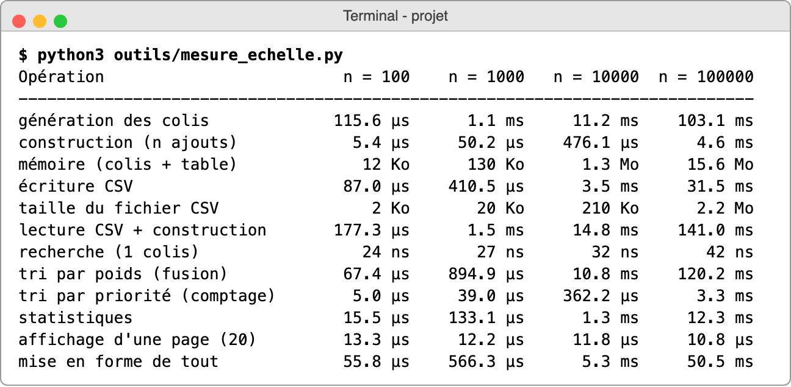
Les mesures se rangent en trois familles, qui correspondent exactement aux complexités annoncées :
Le passage à l'échelle montre surtout l'importance des choix algorithmiques. Le tableau suivant compare, pour 100 000 colis, les choix retenus aux choix « naïfs » mesurés dans les parties 4 et 5 :
| Opération | Choix naïf | Coût naïf (n = 100 000) | Choix retenu | Coût retenu |
|---|---|---|---|---|
| Rechercher un colis | Parcours séquentiel, O(n) | 519 µs | Table de hachage, O(1) | 42 ns |
| Trier par poids | Tri par insertion, O(n²) | ≈ 100 s | Tri fusion, O(n log n) | 120 ms |
| Trier par priorité | Tri fusion, O(n log n) | 117 ms | Tri par comptage, O(n) | 3 ms |
| Charger 100 000 colis sans doublon | Liste, contrôle par parcours, O(n²) | ≈ 5×109 comparaisons | Table de hachage, O(n) | 4,6 ms |
À 100 colis, tous ces choix seraient acceptables : le tri par insertion ne prend que 0,1 ms. C'est seulement quand n augmente que l'écart devient décisif : un facteur de près de 1 000 pour le tri, et une durée de chargement qui deviendrait inacceptable avec une liste. Un algorithme se juge donc sur sa croissance, pas sur sa durée pour une petite entrée.
Mémoire. L'occupation est linéaire : environ 156 octets par colis, soit 112 pour l'objet
Colis et le reste pour la table de hachage, ce qui fait 15,6 Mo pour 100 000 colis. On peut extrapoler
environ 160 Mo pour un million de colis, ce qui reste raisonnable. La question des très grands volumes est
traitée dans la partie 12.
Interface. Afficher tous les colis reste possible (51 ms de mise en forme pour 100 000 colis), mais cela représenterait 5 000 écrans. L'affichage par pages, en temps constant, est donc indispensable dès le niveau 3.
Conclusion. Jusqu'au niveau 4, toutes les opérations de gestion prennent au plus 150 ms environ et moins de 16 Mo : les structures et algorithmes retenus conviennent aux quatre tailles demandées, avec une marge confortable. L'opération dont le coût augmentera le plus vite est la préparation du camion, étudiée dans la partie 8.
Le camion a une capacité maximale W (en kg). Il faut choisir les colis à charger de sorte que poids total ≤ W, en transportant la plus grande valeur totale possible. Chaque colis est soit chargé entièrement, soit laissé : on ne peut pas en charger une partie. C'est le problème classique du sac à dos 0/1. En notant xi = 1 si le colis i est chargé, et 0 sinon :
maximiser v1.x1 + v2.x2 + ... + vn.xn (valeur transportée) sous p1.x1 + p2.x2 + ... + pn.xn <= W (capacité du camion) avec chaque xi égal à 0 ou 1
Comme le souligne le sujet, trouver une combinaison qui respecte la capacité ne suffit pas : il faut la meilleure. Or le nombre de combinaisons possibles est 2n. Il vaut 16 pour 4 colis, environ 1 milliard pour 30 colis et environ 1030 pour 100 colis. Les essayer toutes est donc impossible dès quelques dizaines de colis. Ce problème est d'ailleurs réputé difficile (NP-difficile) : on ne connaît pas d'algorithme exact dont le coût soit polynomial à la fois en n et en la taille de W.
Exemple du sujet. Les colis A (8 kg, valeur 20), B (6 kg, 25), C (5 kg, 18) et D (4 kg, 14) pèsent 23 kg au total. Avec la capacité de 50 kg citée en exemple, ils tiennent tous et la question ne se pose pas. On fait donc varier la capacité. La capacité W = 14 kg sert d'exemple principal, car elle oblige à faire un vrai choix.
L'idée intuitive consiste à charger d'abord les colis qui « rapportent le plus par kilo », c'est-à-dire ceux dont le rapport valeur / poids est le plus élevé, tant qu'ils tiennent dans le camion :
| Colis | Poids | Valeur | Valeur / poids | Ordre du glouton |
|---|---|---|---|---|
| B | 6 kg | 25 | 4,17 | 1er |
| C | 5 kg | 18 | 3,60 | 2e |
| D | 4 kg | 14 | 3,50 | 3e |
| A | 8 kg | 20 | 2,50 | 4e |
Avec W = 14 kg, le glouton prend B (6 kg), puis C (11 kg). D ne tient plus (15 kg), ni A (19 kg). Il obtient donc B + C = 43, avec 3 kg inutilisés. Or A + B = 45 remplit exactement les 14 kg : le glouton n'est pas optimal. Le colis C, très rentable au kilo, occupe une place qui aurait été mieux utilisée par A. Le glouton serait optimal si l'on pouvait charger une fraction de colis (sac à dos « fractionnaire ») : il compléterait alors les 3 kg restants avec 3/8 de A. En 0/1, ce n'est pas possible. Il faut donc une méthode qui examine réellement les combinaisons, sans les énumérer toutes.
On découpe le problème en sous-problèmes plus petits, dont on mémorise les solutions pour ne jamais les recalculer. On note T[i][w] la meilleure valeur atteignable avec une capacité de w kg, en n'utilisant que les i premiers colis. Pour le colis i (poids pi, valeur vi), il n'y a que deux possibilités :
T[0][w] = 0 (aucun colis) T[i][w] = max( T[i-1][w] , T[i-1][w - pi] + vi ) si pi <= w T[i][w] = T[i-1][w] sinon Réponse : T[n][W]
Le script outils/etude_exemple_camion.py affiche le tableau complet. On le remplit ligne par
ligne : chaque case ne dépend que de la ligne précédente.
Retrouver les colis chargés. On remonte depuis la case finale. Si T[i][w] = T[i-1][w], le colis i n'a pas été pris. Sinon, il l'a été, et l'on continue avec w - pi. Ici : D n'est pas pris (45 = 45), C non plus, B est pris (45 ≠ 20, w devient 8), A est pris (20 ≠ 0, w devient 0). On obtient A + B = 45.
Le programme (sac_a_dos_dp dans src/chargement.py) applique cette récurrence avec
trois améliorations, qui ne changent pas le résultat :
meilleur[0..W], mis à jour sur place. On le parcourt de w = W vers w = pi
(sens décroissant) : ainsi, meilleur[w - pi] contient encore la valeur de la
ligne précédente, et chaque colis n'est pris qu'une fois.pris[w], qui vaut 1 si le colis améliore meilleur[w]. Une case coûte 1 octet,
contre au moins 8 pour un tableau de nombres Python : pour 100 000 colis et 1 000 kg, cela fait
environ 100 Mo au lieu de plus de 800 Mo.meilleur = [0] * (W + 1)
pour chaque colis (p, v) :
pris = tableau de W + 1 octets à 0
pour w de W jusqu'à p (en décroissant) :
si meilleur[w - p] + v > meilleur[w] :
meilleur[w] = meilleur[w - p] + v
pris[w] = 1
remonter les colis du dernier au premier depuis w = W :
si pris[w] = 1 : charger le colis, w = w - p
| Pourquoi cette stratégie ? | Le sujet demande la meilleure valeur totale. Le glouton est rapide mais peut se tromper (8.2), et la force brute est exacte mais exponentielle. La programmation dynamique est la méthode exacte de référence lorsque les poids sont des entiers et que la capacité reste modérée : c'est le cas d'un camion, de quelques dizaines à quelques milliers de kg. Elle est simple à implémenter et à expliquer, et son coût est prévisible. |
| La solution est-elle toujours optimale ? | Oui. Par récurrence sur i : T[0][w] = 0 est optimal. Supposons la ligne i - 1 optimale. Une solution optimale pour (i, w) soit ne contient pas le colis i, et sa valeur vaut alors au plus T[i-1][w] ; soit le contient, et le reste est un chargement des i - 1 premiers colis dans w - pi kg, de valeur au plus T[i-1][w - pi]. La récurrence prend le maximum de ces deux cas : T[i][w] est donc optimal. Vérification expérimentale : sur 500 instances aléatoires et sur toutes les capacités de 0 à 23 kg de l'exemple du sujet, la programmation dynamique trouve toujours exactement la valeur de la force brute (8.5). |
| Complexité temporelle | O(n × W) : n colis × (W + 1) capacités, chaque case en O(1). S'y ajoutent O(n) pour le filtrage et la reconstruction. Cette complexité est dite pseudo-polynomiale : elle dépend de la valeur de W. Doubler la capacité double le temps de calcul. |
| Complexité spatiale | O(n × W) octets pour les décisions (n × (W + 1) octets), plus O(W) pour le tableau meilleur. Si l'on ne voulait que la valeur optimale, sans la liste des colis, O(W) suffirait. |
| Autres approches possibles |
Glouton par rapport valeur / poids : O(n log n), mais sans garantie d'optimalité. Force brute : 2n combinaisons, exacte, utilisable jusqu'à une vingtaine de colis (sert ici à la vérification). Séparation et évaluation (branch and bound) : exploration des combinaisons en abandonnant les branches qui ne peuvent pas battre la meilleure solution connue, la borne étant donnée par le sac à dos fractionnaire. Exacte et souvent rapide, mais exponentielle dans le pire cas. Programmation dynamique sur la valeur plutôt que sur le poids : O(n × V), intéressante si les valeurs sont petites et les poids grands. Schéma d'approximation (FPTAS) : on arrondit les valeurs pour garantir au moins (1 - ε) fois l'optimum, en temps polynomial. Solveur de programmation linéaire en nombres entiers : exclu ici, car il s'agirait d'une bibliothèque externe résolvant directement le problème. |
Récapitulatif au format demandé pour les choix algorithmiques :
| Problème | Choisir les colis à charger sans dépasser la capacité W, en maximisant la valeur totale. |
| Solution | Programmation dynamique du sac à dos 0/1, sur une ligne de valeurs, avec des décisions sur un octet. |
| Temps | O(n × W). |
| Espace | O(n × W) octets, plus O(W). |
| Alternative | Glouton en O(n log n), non optimal ; force brute en O(2n). |
| Justification | C'est la seule méthode simple qui garantit le meilleur chargement en un temps raisonnable pour un camion réel. Elle est prouvée et vérifiée expérimentalement. |
Pour chaque capacité de 0 à 23 kg, le script compare les trois méthodes sur les colis A, B, C, D. La programmation dynamique trouve toujours la valeur de la force brute (le script le vérifie). Le glouton, lui, se trompe pour 7 capacités sur 24 : 9, 14, 18 et de 19 à 22 kg, avec jusqu'à 7 de valeur en moins.

Dix-huit tests (tests/test_chargement.py) complètent cette vérification :
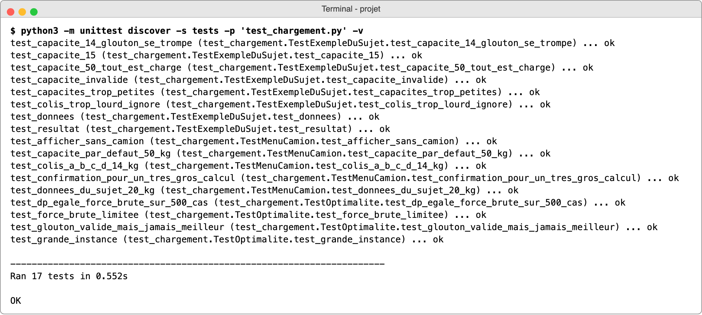
L'option 5 demande la capacité (50 kg par défaut, comme dans le sujet), puis la règle de sélection présentée dans la partie 9. Dans cette partie, on choisit la règle 1 (valeur seule), qui correspond à la partie 5 du sujet. Le programme calcule alors le chargement optimal. Pour mettre en évidence l'intérêt de la méthode exacte, elle affiche aussi le résultat qu'aurait donné le glouton. L'option 6 détaille le dernier chargement : colis chargés, poids, taux de remplissage, valeur. La collection n'est pas modifiée : on peut préparer plusieurs camions de capacités différentes et les comparer.
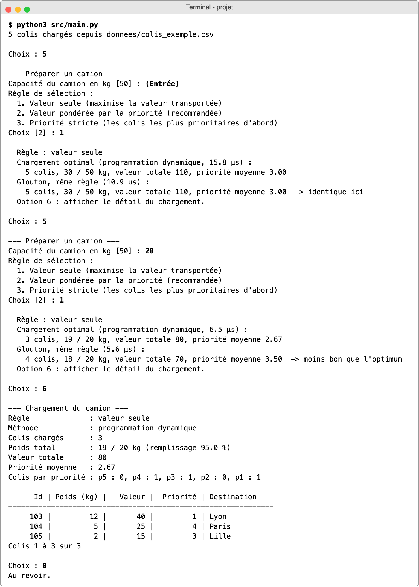
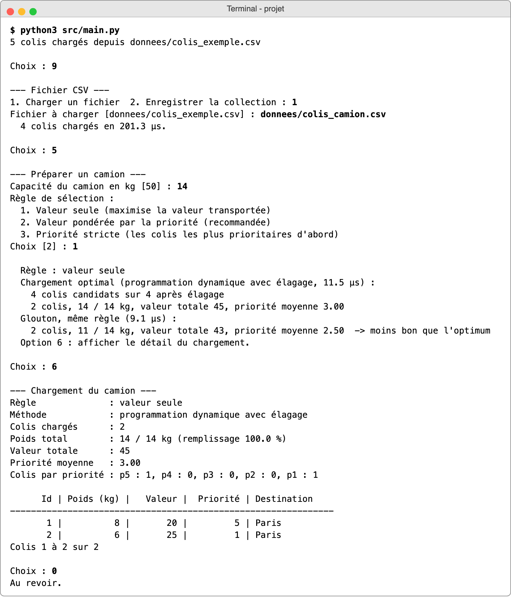
donnees/colis_camion.csv), camion de 14 kg : A + B = 45Avant un calcul très lourd (plus de 50 millions de cases n × W), le programme indique le nombre de cases et la mémoire nécessaire, puis demande une confirmation :
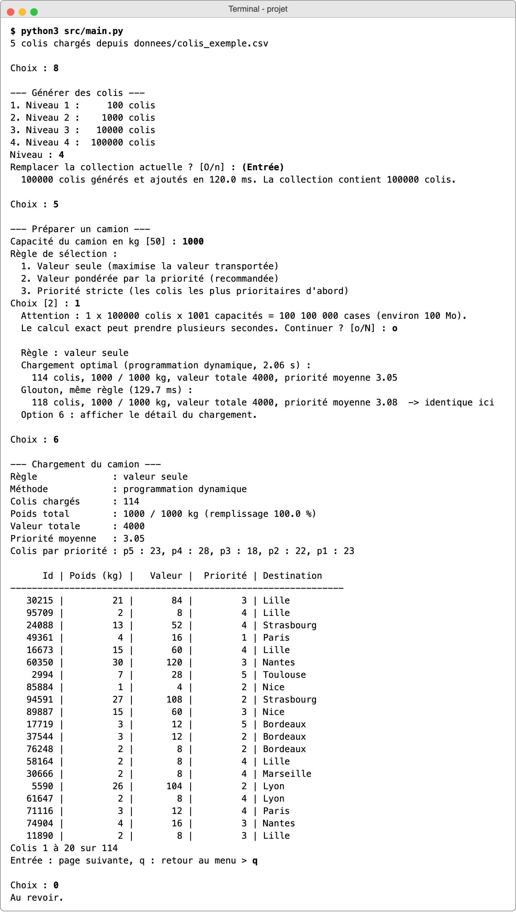
Le script outils/mesure_chargement.py mesure le temps et le pic de mémoire de la programmation
dynamique. Il fait d'abord varier n avec W = 1 000 kg, puis W avec n = 10 000 colis :
| n | W | Cases n × W | Temps DP | Mémoire DP | Temps glouton | Valeur glouton / optimum |
|---|---|---|---|---|---|---|
| 100 | 1 000 kg | 0,1 million | 2,8 ms | 0,1 Mo | 0,1 ms | 99,87 % |
| 1 000 | 1 000 kg | 1 million | 24,0 ms | 1,1 Mo | 1,0 ms | 100 % |
| 10 000 | 1 000 kg | 10 millions | 205,9 ms | 11,3 Mo | 10,7 ms | 100 % |
| 100 000 | 1 000 kg | 100 millions | 2,06 s | 113,7 Mo | 128,6 ms | 100 % |
| 10 000 | 100 kg | 1 million | 15,0 ms | 2,3 Mo | 10,6 ms | 100 % |
| 10 000 | 10 000 kg | 100 millions | 2,21 s | 101,7 Mo | 10,8 ms | 100 % |
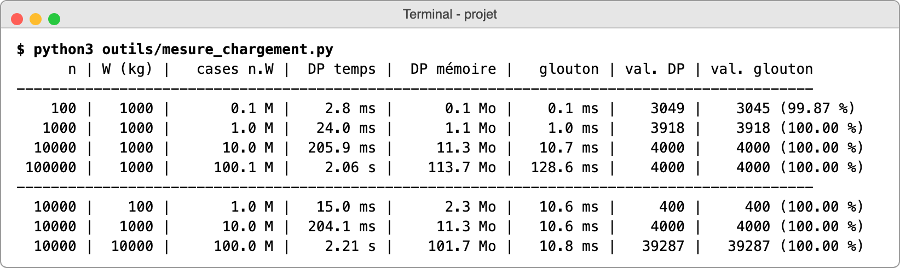
La programmation dynamique répond donc au besoin pour les quatre niveaux du sujet. Son coût en O(n × W) peut toutefois être fortement réduit sans perdre l'optimalité : c'est l'objet de l'étude des performances (partie 10).
L'entreprise souhaite favoriser les colis dont la priorité est importante. Le sujet n'impose aucune formule : il demande une règle cohérente qui tienne compte du poids, de la valeur et de la priorité. On rappelle la convention de la partie 3 : 5 est la priorité la plus forte. Les données de la partie 6.1 du sujet sont :
| Colis | Poids | Valeur | Priorité |
|---|---|---|---|
| A | 8 kg | 20 | 5 |
| B | 6 kg | 25 | 1 |
| C | 5 kg | 18 | 4 |
| D | 4 kg | 14 | 3 |
Avec un camion de 14 kg, la partie 8 charge A + B (valeur 45). Or B est le colis le moins prioritaire (priorité 1). L'objectif est qu'une règle tenant compte de la priorité puisse préférer un chargement plus prioritaire, au prix d'un peu de valeur.
La programmation dynamique de la partie 8 maximise une somme d'« utilités » sous la contrainte de poids.
Jusqu'ici, l'utilité d'un colis était sa valeur. Pour prendre en compte la priorité, il suffit de
définir une autre utilité, qui dépend de la valeur et de la priorité, et de la donner au même
algorithme (fonction fabrique_utilite de src/chargement.py). Ce choix a trois
avantages :
Les trois critères demandés par le sujet ont chacun un rôle précis :
| Critère | Rôle dans la sélection |
|---|---|
| Poids | Contrainte stricte de la programmation dynamique : le poids total ne dépasse jamais la capacité. |
| Valeur | Base de l'utilité : à priorité égale, le colis de plus grande valeur est toujours préféré. |
| Priorité | Coefficient multiplicateur de la valeur : plus la priorité est forte, plus le colis « compte ». |
utilité(colis) = valeur x ( 1 + alpha x (priorité - 1) / 4 ) avec alpha >= 0
Le coefficient appliqué à la valeur va de 1 pour une priorité 1 à 1 + α pour une priorité 5. Le paramètre α règle l'importance accordée à la priorité. Par défaut, α = 1 :
| Priorité | 1 | 2 | 3 | 4 | 5 |
|---|---|---|---|---|---|
| Coefficient (α = 1) | 1 | 1,25 | 1,5 | 1,75 | 2 |
| Coefficient (α = 0,5) | 1 | 1,125 | 1,25 | 1,375 | 1,5 |
Application à l'exemple 6.1 (α = 1, W = 14 kg). Les utilités valent A = 20 × 2 = 40, B = 25 × 1 = 25, C = 18 × 1,75 = 31,5 et D = 14 × 1,5 = 21. Les combinaisons qui tiennent dans 14 kg sont :
| Combinaison | Poids | Valeur réelle | Utilité | Priorité moyenne |
|---|---|---|---|---|
| A + B | 14 kg | 45 | 65 | 3,0 |
| A + C | 13 kg | 38 | 71,5 | 4,5 |
| A + D | 12 kg | 34 | 61 | 4,0 |
| B + C | 11 kg | 43 | 56,5 | 2,5 |
| C + D | 9 kg | 32 | 52,5 | 3,5 |
| B + D | 10 kg | 39 | 46 | 2,0 |
La règle choisit A + C. B (priorité 1) est remplacé par C (priorité 4) : la valeur transportée passe de 45 à 38, mais la priorité moyenne passe de 3,0 à 4,5. Le programme affiche explicitement ce compromis (figure 31).
Rôle de α. A + B a pour utilité 45 + 20α, et A + C a pour utilité 38 + 33,5α. A + C l'emporte dès que 13,5α > 7, c'est-à-dire α > 0,52. Avec α = 0,5, le programme garde donc A + B (figure 32), et avec α = 1, il choisit A + C. L'entreprise fixe ainsi elle-même le prix qu'elle accepte de payer en valeur pour servir les colis importants.
Priorité stricte (implémentée, règle 3 du menu). On veut qu'un colis de priorité p passe avant n'importe quel ensemble de colis moins prioritaires. On pose :
utilité(colis) = (valeur + 1) x B^(priorité - 1) avec B = 1 + somme des (valeur + 1) de tous les colis
Tous les colis de priorité inférieure à p réunis ont une utilité totale strictement inférieure à Bp-1, donc à l'utilité d'un seul colis de priorité p. Maximiser la somme revient ainsi à maximiser d'abord ce qui est chargé en priorité 5, puis en priorité 4, etc. : c'est un ordre lexicographique. Le « + 1 » permet de compter aussi un colis prioritaire de valeur nulle. Les entiers Python n'ayant pas de taille limite, le calcul reste exact. Pour l'exemple 6.1, on a B = 82 et la règle choisit aussi A + C. Cette règle convient lorsque les priorités traduisent des engagements contractuels. Elle peut cependant sacrifier beaucoup de valeur : avec 9 kg, elle charge A seul (valeur 20) plutôt que C + D (valeur 32), et un test vérifie qu'un colis de priorité 5 et de valeur 1 est préféré à deux colis de valeur 100.
| Règle | Avantages | Inconvénients |
|---|---|---|
| Valeur pondérée (retenue) | Compromis réglable par α, généralise la partie 5, optimale pour la règle. | α doit être choisi par l'entreprise. |
| Priorité stricte (implémentée) | Aucun colis prioritaire n'est jamais sacrifié pour des colis moins prioritaires. | Peut perdre beaucoup de valeur ; calcul sur de très grands entiers, environ 40 % plus lent (9.6). |
| Colis obligatoires au-dessus d'un seuil | Très simple à expliquer : « tous les colis de priorité 5 partent ». | Impossible si les colis obligatoires dépassent la capacité. Le seuil est arbitraire, et un colis de priorité 4 compte autant qu'un colis de priorité 1. |
| Somme additive : valeur + β × priorité | Simple. | Mélange deux grandeurs sans unité commune : le bon β dépend des données. |
| Trier par priorité puis charger dans l'ordre | Très rapide, en O(n) avec le tri par comptage. | Glouton : ni la capacité ni la valeur ne sont optimisées. |
Le script outils/etude_priorite.py applique chaque règle aux colis A, B, C, D pour toutes les
capacités de 8 à 23 kg :
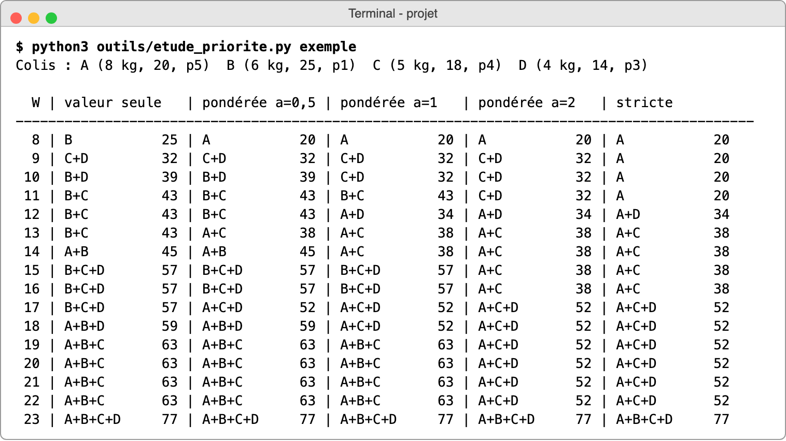
Sur 10 000 colis générés (dont 1 944 de priorité 5) et un camion de 1 000 kg :
| Règle | Valeur | % du maximum | Priorité moyenne | Colis p5 | Colis p1 | Temps |
|---|---|---|---|---|---|---|
| Valeur seule | 4 000 | 100,0 % | 3,06 | 33 | 26 | 212 ms |
| Pondérée, α = 0,25 | 3 988 | 99,7 % | 4,99 | 101 | 0 | 205 ms |
| Pondérée, α = 1 | 3 987 | 99,7 % | 5,00 | 97 | 0 | 206 ms |
| Pondérée, α = 5 | 3 987 | 99,7 % | 5,00 | 97 | 0 | 206 ms |
| Stricte | 3 976 | 99,4 % | 5,00 | 113 | 0 | 293 ms |
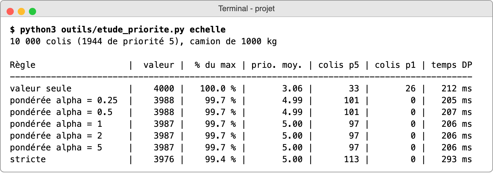
L'option 5 propose les trois règles, la règle pondérée étant choisie par défaut (Entrée). Pour cette règle, elle demande α, avec 1 par défaut ; la virgule est acceptée. Quand la règle n'est pas « valeur seule », le programme calcule aussi le chargement sans priorité et affiche ce que la priorité coûte en valeur et ce qu'elle apporte en priorité moyenne. L'option 6 indique la règle utilisée, la priorité moyenne et le nombre de colis chargés pour chaque priorité.
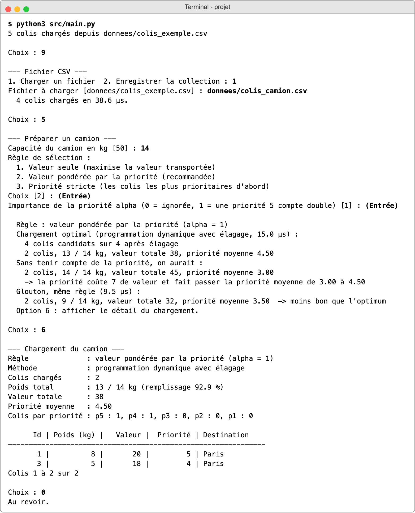
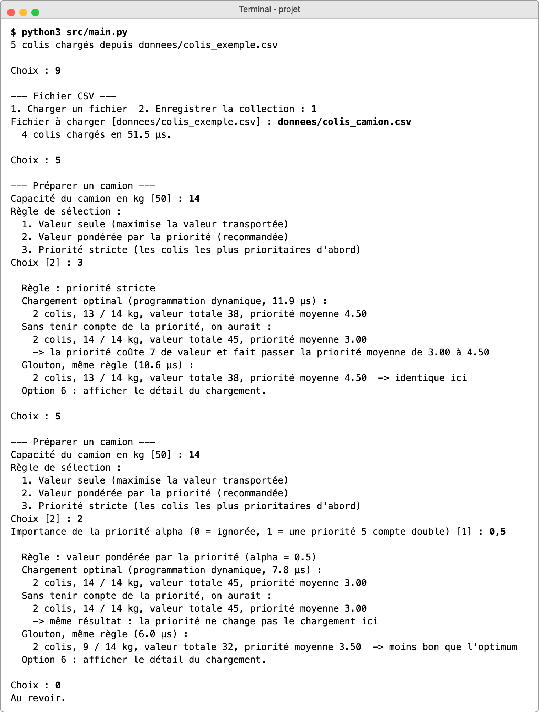
| Problème | Favoriser les colis prioritaires lors du chargement, sans dépasser la capacité et sans négliger la valeur. |
| Solution | Maximiser, par la programmation dynamique de la partie 8, l'utilité valeur × (1 + α × (priorité - 1) / 4). |
| Temps | O(n × W), inchangé. Calculer les utilités coûte O(n). |
| Espace | O(n × W) octets, inchangé. |
| Alternatives | Priorité stricte (lexicographique, implémentée), colis obligatoires, somme additive, tri par priorité suivi d'un glouton. |
| Justification | Règle cohérente avec les trois critères, réglable, qui généralise la partie 5 (α = 0) et donne un chargement optimal pour la règle, en réutilisant un algorithme déjà prouvé. |
Quinze tests (tests/test_priorite.py) vérifient :
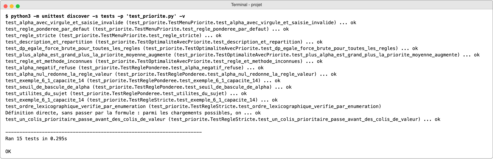
L'entreprise utilise régulièrement le système pour rechercher et organiser ses colis, et pour préparer ses camions. Cette partie mesure le comportement des principales opérations pour les quatre tailles de données du sujet, analyse trois d'entre elles en détail, puis présente l'optimisation apportée à la plus coûteuse : la préparation du camion.
| Élément | Choix |
|---|---|
| Machine | Apple M5, 16 Go de mémoire, Python 3.14.7 |
| Données | Colis générés par generateur.py (graine fixe : mesures reproductibles), 100, 1 000, 10 000 et 100 000 colis |
| Camion | Capacité de 1 000 kg, règle « valeur seule » |
| Temps | Meilleur temps sur 3 à 5 exécutions (time.perf_counter), ce qui écarte les perturbations du système. La recherche est une moyenne sur 10 000 recherches. |
| Mémoire | Pic de mémoire allouée pendant le calcul (tracemalloc) |
| Scripts | outils/benchmark.py (mesures, enregistrées dans docs/mesures/benchmark.json) et outils/graphiques.py (courbes) |
| Opération | Complexité | n = 100 | n = 1 000 | n = 10 000 | n = 100 000 |
|---|---|---|---|---|---|
| Construction (n ajouts) | O(n) | 4,6 µs | 42,3 µs | 409 µs | 4,6 ms |
| Recherche, table de hachage | O(1) | 21 ns | 22 ns | 30 ns | 41 ns |
| Recherche séquentielle | O(n) | 371 ns | 4,6 µs | 40,6 µs | 535 µs |
| Tri par poids, tri fusion | O(n log n) | 56,5 µs | 777 µs | 9,8 ms | 118,7 ms |
Tri par poids, sorted() | O(n log n) | 3,4 µs | 44,2 µs | 517 µs | 6,2 ms |
| Tri par priorité, comptage | O(n) | 4,0 µs | 33,9 µs | 300 µs | 3,2 ms |
| Statistiques | O(n) | 12,6 µs | 115 µs | 1,2 ms | 12,4 ms |
| Chargement, DP sans élagage | O(n × W) | 2,5 ms | 21,0 ms | 201 ms | 2,03 s |
| Chargement, DP avec élagage | O(n log n + n' × W) | 2,5 ms | 21,3 ms | 70,8 ms | 178,2 ms |
| Chargement, glouton | O(n log n) | 65 µs | 823 µs | 10,3 ms | 125,2 ms |
| Mémoire, DP sans élagage | O(n × W) | 0,1 Mo | 1,1 Mo | 11,3 Mo | 113,7 Mo |
| Mémoire, DP avec élagage | O(n + n' × W) | 0,1 Mo | 1,1 Mo | 3,8 Mo | 7,3 Mo |
| Colis candidats après élagage (n') | 100 | 1 000 | 3 130 | 3 983 |
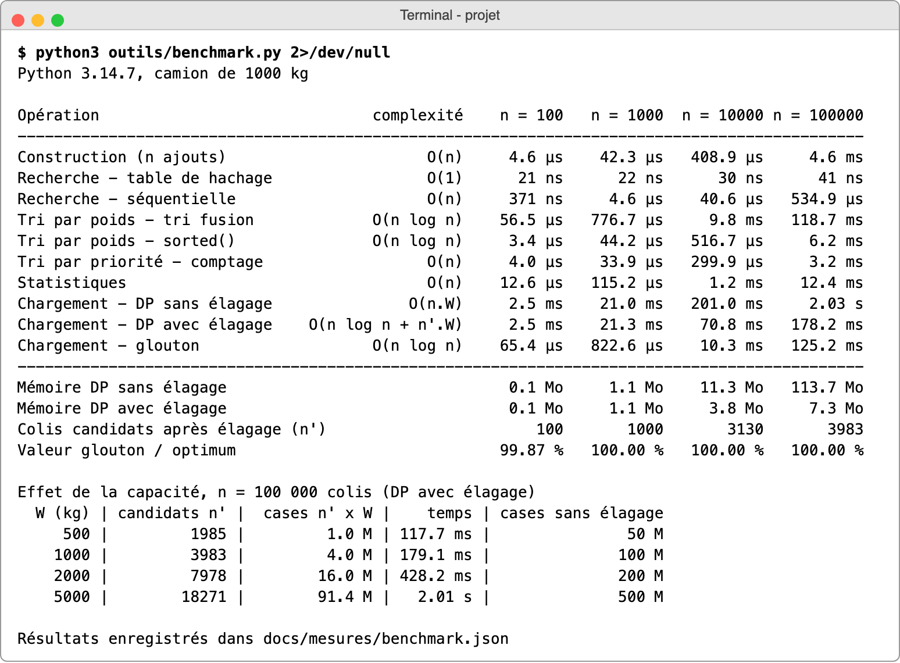
Les deux graphiques suivants reprennent ces mesures en échelle logarithmique sur les deux axes. Avec cette échelle, une opération en O(1) donne une droite horizontale, et une opération en O(n) une droite qui monte d'une graduation chaque fois que n est multiplié par 10. On lit donc directement la complexité dans la pente des courbes.
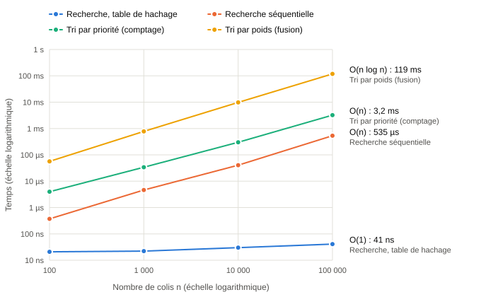
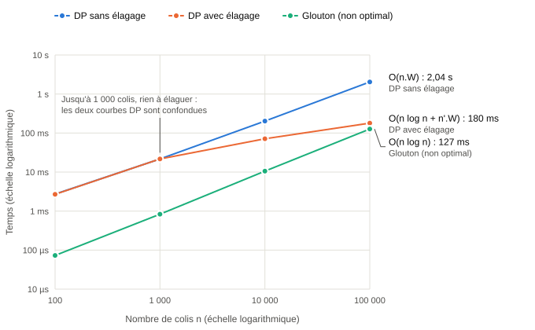
Le sujet demande d'analyser au moins deux opérations dont le coût augmente avec la quantité de données. Les trois plus importantes sont présentées ci-dessous.
| Opération | Retrouver un colis à partir de son identifiant (option 3 du menu). |
| Complexité | Table de hachage : O(1) en moyenne en temps, O(n) en espace pour la table (environ 52 octets par colis). Pour comparaison, la recherche séquentielle est en O(n) en temps. |
| Évolution | Quand n est multiplié par 1 000, la recherche par hachage passe seulement de 21 à 41 ns : le nombre d'opérations ne change pas, seul l'accès à la mémoire ralentit un peu quand la table ne tient plus dans le cache du processeur. La recherche séquentielle est multipliée par 10 à chaque décade et atteint 535 µs, soit 13 000 fois plus. |
| Adaptation aux grands volumes | Oui, parfaitement : le coût d'une recherche ne dépend pas du nombre de colis. |
| Amélioration possible | Le nombre d'opérations est déjà minimal. Pour d'autres besoins, on pourrait ajouter des index secondaires (par exemple destination → liste de colis, pour une recherche par ville en O(1) au lieu de O(n)) ou un arbre B (index de base de données) pour les recherches par intervalle et les données trop volumineuses pour la mémoire. |
| Opération | Organiser les colis par poids, valeur ou priorité (option 4 du menu). |
| Complexité | Tri fusion (poids, valeur) : O(n log n) en temps, O(n) en espace. Tri par comptage (priorité) : O(n + k) en temps et en espace, avec k = 5. |
| Évolution | Le tri fusion est multiplié par environ 12 à chaque décade (9,8 ms puis 118,7 ms) : un peu plus que 10, à cause du facteur log n. Le tri par comptage est multiplié par environ 10 (300 µs puis 3,2 ms). Sur la figure 35, la courbe du tri fusion est légèrement plus pentue que celle du comptage. |
| Adaptation aux grands volumes | Oui pour les quatre niveaux : 119 ms au plus pour 100 000 colis. En extrapolant, il faudrait environ 1,4 s pour un million de colis, ce qui reste acceptable mais devient perceptible. |
| Amélioration possible | (1) Utiliser sorted() (Timsort écrit en C), 19 fois plus rapide avec la même complexité. (2) Le poids étant borné entre 1 et 30 kg dans nos données, le trier lui aussi par comptage, en O(n). (3) Comme l'interface n'affiche qu'une page de 20 colis, n'extraire que les 20 premiers à l'aide d'un tas : O(n log 20) au lieu de O(n log n). (4) Si l'on trie souvent, tenir à jour des index déjà triés à chaque ajout (arbre équilibré, O(log n) par ajout). |
| Opération | Choisir les colis à charger pour maximiser la valeur (ou l'utilité) sans dépasser la capacité W (option 5 du menu). |
| Complexité | Programmation dynamique sans élagage : O(n × W) en temps et en espace. Avec élagage : O(n log n + n' × W) en temps et O(n + n' × W) en espace, où le nombre n' de colis candidats ne dépend plus de n (10.4). |
| Évolution | Sans élagage, le temps et la mémoire sont multipliés par 10 à chaque décade : 2,03 s et 113,7 Mo pour 100 000 colis. C'était l'opération la plus coûteuse du programme, de loin. Avec élagage, n' plafonne vers 4 000 : il ne faut plus que 178 ms et 7,3 Mo, soit 11 fois moins de temps et 15 fois moins de mémoire, pour exactement la même valeur. |
| Adaptation aux grands volumes | Oui pour le nombre de colis : avec l'élagage, passer de 10 000 à 100 000 colis ne fait passer le temps que de 71 à 178 ms. La limite devient la capacité : n' étant proportionnel à W, le nombre de cases n' × W croît comme W². Il faut 2,01 s pour W = 5 000 kg (figure 34). Un semi-remorque de 20 tonnes pesé au kilogramme près demanderait environ 109 cases, soit une vingtaine de secondes et environ 1 Go en Python. |
| Amélioration possible | Réalisée : l'élagage par dominance (10.4). Possibles : stocker les décisions sur 1 bit au lieu de 1 octet (8 fois moins de mémoire) ; méthode de Hirschberg (« diviser pour régner ») pour reconstruire la solution avec seulement O(W) de mémoire, au prix d'un temps environ doublé ; exprimer les poids par tranches de 5 ou 10 kg (W divisé d'autant, mais résultat approché) ; écrire la boucle interne en C. Pour une réponse immédiate, le glouton (125 ms) peut servir de solution provisoire, sans garantie. |
Un camion de W kg ne peut contenir au plus que ⌊W/p⌋ colis de poids p : 1 000 colis de 1 kg, 500 colis de 2 kg, 33 colis de 30 kg pour un camion de 1 000 kg. Parmi tous les colis de poids p, seuls les ⌊W/p⌋ meilleurs (de plus grande utilité) peuvent donc servir. Avant la programmation dynamique, on regroupe les colis par poids et l'on ne garde que ces meilleurs-là. Les colis trop lourds et ceux d'utilité nulle sont aussi écartés.
Supposons qu'un chargement optimal contienne un colis X de poids p qui ne fait pas partie des ⌊W/p⌋ meilleurs. Ce chargement contient au plus ⌊W/p⌋ colis de poids p ; au moins l'un des meilleurs, Y, n'y est donc pas. Remplacer X par Y ne change pas le poids total (même poids p) et ne diminue pas l'utilité (Y est au moins aussi bon que X). On obtient ainsi un chargement optimal qui n'utilise que des colis gardés : l'élagage ne fait jamais perdre l'optimum. Les tests le vérifient contre la force brute sur 300 instances et pour les trois règles, et le benchmark le contrôle à chaque mesure : les valeurs avec et sans élagage doivent être égales.
Le nombre de candidats est au plus n' ≤ Σp ⌊W/p⌋. Pour des poids de 1 à 30 kg, cette somme vaut environ W × (ln 30 + 0,58), soit environ 4 W : elle ne dépend pas du nombre de colis. Pour W = 1 000 kg, la borne vaut 3 983, exactement le nombre mesuré pour 100 000 colis. Avec 10 000 colis, on mesure 3 130 candidats : certains poids n'ont pas assez de colis pour atteindre leur quota.
| Problème | Réduire le coût O(n × W) du chargement optimal, qui atteignait 2 s et 114 Mo pour 100 000 colis. |
| Solution | Élagage par dominance : pour chaque poids p, ne garder que les ⌊W/p⌋ colis de plus grande utilité, puis appliquer la programmation dynamique aux seuls candidats. |
| Temps | Élagage : O(n) pour regrouper par poids, plus O(n log n) au pire pour trier les groupes (tri fusion). Programmation dynamique : O(n' × W) avec n' ≤ Σ ⌊W/p⌋ ≈ 4 W. |
| Espace | O(n) pour les groupes, plus O(n' × W) octets pour les décisions. |
| Alternative | Garder la programmation dynamique sur tous les colis (O(n × W)), ou passer au glouton (rapide mais non optimal). |
| Justification | Le résultat reste exactement optimal (preuve par échange), et le coût du calcul devient indépendant du nombre de colis : il est divisé par 11 en temps et par 15 en mémoire à 100 000 colis. |
Dans le menu, l'option 5 indique le nombre de candidats retenus. L'estimation du coût affichée avant un très gros calcul tient compte de l'élagage : ce nombre est calculé en O(n), sans trier les colis.
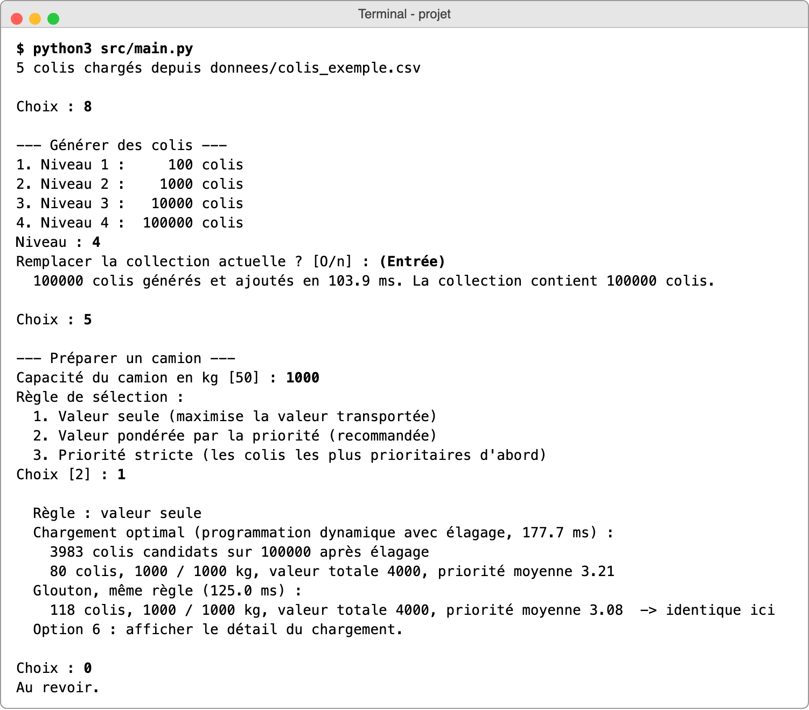
Sept tests (tests/test_performances.py) vérifient que l'élagage :
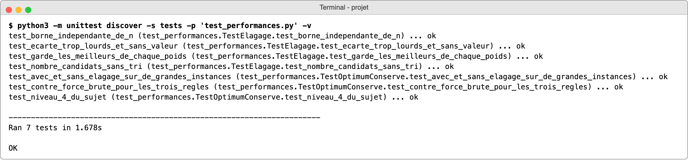